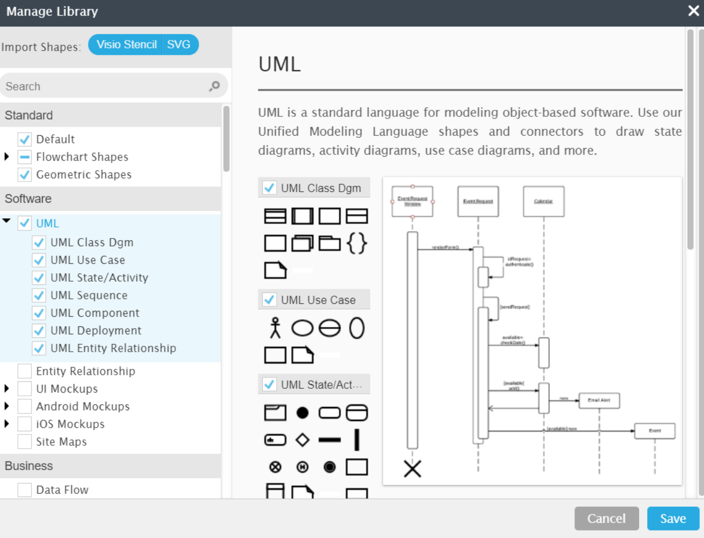

Le langage de modélisation unifié (UML) peut vous aider à modéliser des systèmes de plusieurs façons. Le diagramme de classes est l'un des types les plus populaires en langage UML. Très utilisé par les ingénieurs logiciel pour documenter l'architecture des logiciels, les diagrammes de classes sont un type de diagramme de structure, car ils décrivent ce qui doit être présent dans le système modélisé. Quel que soit votre degré de familiarité avec les diagrammes UML ou les diagrammes de classes, notre logiciel UML est conçu pour être simple à utiliser. Le langage UML a été créé sous forme de modèle standardisé pour décrire une approche de la programmation orientée objet. Comme les classes sont les composantes des objets, les diagrammes de classes sont les composantes de l'UML. Les divers éléments d'un diagramme de classes peuvent représenter les classes qui seront effectivement programmées, les principaux objets ou les interactions entre classes et objets. La forme de la classe à proprement parler se compose d'un rectangle à trois lignes. La ligne supérieure contient le nom de la classe, celle du milieu affiche les attributs de la classe et la ligne inférieure exprime les méthodes ou les opérations que la classe est susceptible d'utiliser. Les classes et sous-classes sont regroupées pour illustrer la relation statique entre chaque objet. La bibliothèque de formes UML de Lucidchart peut vous aider à créer quasiment n'importe quel diagramme de classes personnalisé à l'aide de notre outil de diagramme UML.
Les diagrammes de classes présentent de nombreux avantages pour n'importe quel type d'organisation. Vous pouvez les utiliser pour :
Identifiez les entités principales du système que vous souhaitez modéliser. Chaque classe représente un concept, un objet ou une entité dans le système. Identifiez également les caractéristiques importantes de chaque classe.
Pour chaque classe identifiée, déterminez les attributs (variables d'instance) qui décrivent les caractéristiques ou les propriétés de cette classe. Par exemple, pour une classe "Personne", les attributs pourraient inclure "nom", "âge" et "adresse".
Pour chaque classe, identifiez les méthodes (fonctions ou comportements) qui définissent les actions que la classe peut effectuer. Par exemple, pour la classe "Personne", les méthodes pourraient inclure "changerAdresse()" ou "calculerAge()".
Identifiez les associations entre les classes. Les associations décrivent comment les différentes classes sont liées les unes aux autres. Il existe plusieurs types de relations, notamment les associations, les agrégations, les compositions, les généralisations (héritage), etc.
Indiquez la visibilité (public, privé, protégé) des attributs et des méthodes pour chaque classe. Vous pouvez également préciser le type de données des attributs et des paramètres de méthode.
Utilisez un logiciel de modélisation UML ou un outil de dessin pour créer le diagramme de classe. Placez les classes sur le diagramme et reliez-les avec des lignes pour représenter les relations entre elles.
Si nécessaire, ajoutez des rôles aux associations pour préciser le rôle de chaque classe dans la relation. De plus, spécifiez les multiplicités pour indiquer combien d'objets d'une classe participent à une relation donnée.
Le diagramme de classe doit évoluer avec le projet. Lorsque de nouveaux besoins ou des changements surviennent, mettez à jour le diagramme pour refléter ces modifications.
Enfin, assurez-vous de documenter correctement le diagramme de cas d'utilisation, y compris les descriptions détaillées des cas d'utilisation, les relations et tout autre élément pertinent.
Assurez-vous de documenter correctement le diagramme de classe, y compris les descriptions des classes, des attributs, des méthodes et des relations. Cette documentation est précieuse pour les développeurs qui implémentent le système.
{kind=link}